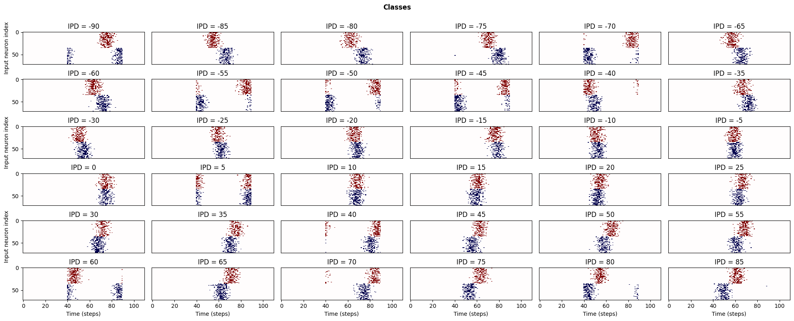

Vanilla sound localization problem with a single delay layer (non-spiking)
Contents
Vanilla sound localization problem with a single delay layer (non-spiking)¶
Here, I showcase the solution to the sound localization problem using only differentiable delays. For this project, this is the fruit of the work done on differentiable delays. I truly grateful for everyone that I interacted with in this project. For me, it was a nice experience and I hope we can do similar projectes to tackle different projects in the future.
#@title Main docstring
"""Solving the sound localization problem with only differentiable delays (non-spiking)
Functions:
input_signal: outputs poisson generated spike trains for a given input IPD
get_batch: generate a fixed size patch of input-targets from the input-signal function
snn_sl: defines the synaptic integration function
analyse: a visualization function for the results of the training
Classes:
Delaylayer: defines the delaylayer object
Delayupdate: defines the object responisble for the application of surrogate delay updates
"""
'Solving the sound localization problem with only differentiable delays (non-spiking)\n\nFunctions:\n input_signal: outputs poisson generated spike trains for a given input IPD\n get_batch: generate a fixed size patch of input-targets from the input-signal function\n snn_sl: defines the synaptic integration function\n analyse: a visualization function for the results of the training\n\nClasses:\n Delaylayer: defines the delaylayer object\n Delayupdate: defines the object responisble for the application of surrogate delay updates\n'
Imports¶
#@title Imports
import numpy as np
import matplotlib.pyplot as plt
import torch
import torch.nn as nn
import torch.nn.functional as F
from sklearn.metrics import confusion_matrix
import seaborn as sn
import pandas as pd
dtype = torch.float
torch.set_printoptions(precision=8, sci_mode=False, linewidth=200)
np.set_printoptions(precision=10, suppress=True)
np.random.seed(0)
torch.manual_seed(0)
<torch._C.Generator at 0x7fab02a93330>
Definitions¶
#@title Relevant definitions
# Not using Brian so we just use these constants to make equations look nicer below
SECOND = 1
MS = 1e-3
HZ = 1
# Stimulus and simulation parameters
DT = 1 * MS # Large time step to make simulations run faster for tutorial
ENVELOPE_POWER = 10 # Higher values make sharper envelopes, easier
RATE_MAX = 600 * HZ # Maximum Poisson firing rate
F = 20 * HZ # Stimulus frequency
DURATION = 50 * MS # Stimulus duration
DURATION_STEPS = int(np.round(DURATION / DT)) # The length of the stimulus
ANG_STEP = 5 # Minimum angle difference between the IPD classes
NUMBER_CLASSES = int(180/ANG_STEP) # Number of IPD classes
# Training parameters
NB_EPOCHS = 20000
BATCH_SIZE = 200
device = device = torch.device("cpu")
"""Delay paramters and functions"""
MAX_DELAY = 20 # Assumed to be in ms
NUMBER_INPUTS = 2 # Number of input spikes trains corresponding to the two ears
EFFECTIVE_DURATION = MAX_DELAY * 3 + int(np.round(DURATION / DT))
TAU, TAU_DECAY, TAU_MINI, TAU_DECAY_FLAG = 40, 0.005, 5, True # Time constant decay settings
ROUND_DECIMALS = 4 # For the stability of the delay layer
FIX_FIRST_INPUT = True # Fix the first input in delay learning
SHOW_IMAGE = True # Visualization of the whole raster plot or target spikes
SYNAPSE_TYPE = 1 # 0 for multiplicaitve, 1 for subtractive
LR_DELAY = 2 # Learning rate for the differentiable delays
Input-target generator¶
#@title Input target generators
def input_signal(ipd_choice=0):
"""Generates input-target pairs
Parameters:
ipd_choice(int): input ipd in degrees
Returns:
spikes_out(numpy.ndarray, (NUMBER_CLASSES, NUMBER_INPUTS, EFFECTIVE_DURATION)): The input spike trains
ipds_hot(numpy.ndarray, (NUMBER_CLASSES,)): One hot incoding of the classes
"""
ipds_hot = np.zeros((NUMBER_CLASSES,))
ipds_norm = np.arange(-90, 90, ANG_STEP)
ipds_hot[np.where(ipds_norm==ipd_choice)[0][0]] = 1
ipds_rad = np.array([ipd_choice*np.pi/180]*NUMBER_CLASSES)
time_axis = np.arange(DURATION_STEPS) * DT # array of times
phi = 2*np.pi*(F * time_axis + np.random.rand()) # array of phases corresponding to those times with random offset
theta = np.zeros((NUMBER_CLASSES, NUMBER_INPUTS, DURATION_STEPS))
zeros_pad = np.zeros((NUMBER_CLASSES, NUMBER_INPUTS, MAX_DELAY))
theta[:, 0, :] = phi[np.newaxis, :]
theta[:, 1, :] = phi[np.newaxis, :] + ipds_rad[:, np.newaxis]
# now generate Poisson spikes at the given firing rate as in the previous notebook
spikes_out = np.random.rand(NUMBER_CLASSES, NUMBER_INPUTS, DURATION_STEPS) < RATE_MAX * \
DT * (0.5 * (1 + np.sin(theta))) ** ENVELOPE_POWER
spikes_out = np.concatenate((zeros_pad, zeros_pad, spikes_out, zeros_pad), axis=2)
spikes_out = np.swapaxes(spikes_out, 0, 1)
yield (spikes_out, ipds_hot)
Batch generator and input visualization¶
#@title Batch generator function and visualization of inputs
def get_batch():
"""Generates a batch of input-target pairs with a predefined length
Parameters:
Returns:
inputs(torch.Tensor, (BATCH_SIZE, NUMBER_CLASSES, NUMBER_INPUTS, EFFECTIVE_DURATION)): A batch of input spike trains
targets(torch.Tensor, (BATCH_SIZE, NUMBER_CLASSES)): A batch of one hot incoded targets
"""
inputs, targets = [], []
for _ in range(BATCH_SIZE):
choice = np.random.choice(np.arange(-90, 90, ANG_STEP))
value_input, value_target = next(input_signal(ipd_choice=choice))
inputs.append(value_input)
targets.append(value_target)
yield torch.Tensor(np.array(inputs)), torch.Tensor(np.array(targets))
# The below code is for the visualization of the input spike trains
spikes_out_all, ipds_hot_all = [], []
for i in np.arange(-90, 90, ANG_STEP):
spikes_out_temp, ipds_hot_temp= next(input_signal(ipd_choice=i))
spikes_out_all.append(spikes_out_temp)
ipds_hot_all.append(ipds_hot_temp)
spikes_out_all, ipds_hot_all = np.array(spikes_out_all), np.array(ipds_hot_all)
fig, axs = plt.subplots(6, 6, figsize=(20, 8), dpi=100)
ipds_range = np.arange(-90, 90, ANG_STEP)
for i, ax in enumerate(axs.flat):
if SHOW_IMAGE:
image_1 = spikes_out_all[i, 0, :, :].copy()
image_1[image_1==0] = 0.75
image_2 = spikes_out_all[i, 1, :, :].copy()*0.5
image_2[image_2==0] = 0.75
ax.imshow(np.concatenate((image_1, image_2)), aspect='auto',
interpolation='nearest', cmap='seismic')
else:
ax.imshow(spikes_out_all[i, :, i, :], aspect='auto', interpolation='nearest', cmap=plt.cm.gray_r)
ax.set_title(f'IPD = {ipds_range[i]}')
if i >= 30:
ax.set(xlabel='Time (steps)')
if i % 12 == 0:
ax.set(ylabel='Input neuron index')
if i % 6 != 0:
ax.tick_params(axis='y', which='both', right=False, left=False, labelleft=False)
if i < 30:
ax.tick_params(axis='x', which='both', bottom=False, top=False, labelbottom=False)
fig.suptitle('Classes', fontweight="bold", x=0.5, y=1.0)
plt.tight_layout()
plt.show()

Delay Layer¶
#@title Delay layer
np.random.seed(0)
torch.manual_seed(0)
class DelayLayer(nn.Module):
"""The delay layer class
This class defines an array of differentiable delays of size (NUMBER_INPUTS, NUMBER_CLASSES)
to applied between any SNN layers
Attributes:
self.max_delay(int): maximum value of the applied delays
self.trainable_delays(boolen): A flag that defines whether the delay array is differentiable or not
self.number_inputs(int): the number of the input spike trains
self.constant_delays(boolen): the initialized delays all have a constant value
self.constant_value(int): the initialized delays constant value
self.lr_delay(float): learning rate for the differentiable delays
self.effective_duration(int): length of the agumented input duration in ms
self.delays_out(int, (NUMBER_INPUTS, NUMBER_CLASSES)): the initialized delay array
self.optimizer_delay(torch.optim): the backprop optimizer for the differentiable delays
"""
def __init__(self, max_delay_in=19, train_delays=True, num_ear=2,
constant_delays=False, constant_value=0, lr_delay=1e-3):
super().__init__()
self.max_delay = max_delay_in
self.trainable_delays = train_delays
self.number_inputs = NUMBER_INPUTS
self.constant_delays = constant_delays
self.constant_value = constant_value
self.lr_delay = lr_delay # Not fine-tuned much
self.effective_duration = EFFECTIVE_DURATION
self.delays_out = self._init_delay_vector()
self.optimizer_delay = self._init_optimizer()
# Delays with constant or random initialisation
# Might think of other ways to initialize delays and their effect on performance
def _init_delay_vector(self):
"""the applied delays initializer
Parameters:
Returns:
delays(int, (NUMBER_INPUTS, NUMBER_CLASSES)): the initialized delay array
"""
if FIX_FIRST_INPUT:
self.number_inputs = NUMBER_INPUTS - 1
else:
self.number_inputs = NUMBER_INPUTS
if self.constant_delays:
delays = torch.nn.parameter.Parameter(torch.FloatTensor(
self.constant_value * np.ones((self.number_inputs, NUMBER_CLASSES), dtype=int)), requires_grad=self.trainable_delays)
else:
delays_numpy = np.random.randint(1, self.max_delay,
size=(self.number_inputs, NUMBER_CLASSES), dtype=int)
# delays_numpy = np.arange(0, 20, 1)
delays = torch.nn.parameter.Parameter(torch.FloatTensor(delays_numpy), requires_grad=self.trainable_delays)
return delays
def _init_optimizer(self):
"""the delay optimizer initializer
Parameters:
Returns:
"""
optimizer_delay = torch.optim.SGD([self.delays_out], lr=self.lr_delay)
return optimizer_delay
def forward(self, spikes_in):
"""forward pass through the delay layer
Parameters:
spikes_in(torch.Tensor, (BATCH_SIZE, NUMBER_INPUTS, NUMBER_CLASSES, EFFECTIVE_DURATION)): the input spike trains to be shifted
Returns:
output_train(torch.Tensor, (BATCH_SIZE, NUMBER_INPUTS, NUMBER_CLASSES, EFFECTIVE_DURATION)): the shifted(delay applied) spike trains
"""
input_train = spikes_in[:, :, :, :, None]
if FIX_FIRST_INPUT:
input_first = input_train[:, 0:1, :, :, :]
input_train = input_train[:, 1:, :, :, :]
dlys = delay_fn(self.delays_out)
batch_size, inputs, classes, duration, _ = input_train.size()
# initialize M to identity transform and resize
translate_mat = np.array([[1., 0., 0.], [0., 1., 0.]])
translate_mat = torch.FloatTensor(np.resize(translate_mat, (batch_size, inputs, classes, 2, 3)))
# translate with delays
translate_mat[:, :, :, 0, 2] = 2 / (duration - 1) * dlys
# create normalized 1D grid and resize
x_t = np.linspace(-1, 1, duration)
y_t = np.zeros((1, duration)) # 1D: all y points are zeros
ones = np.ones(np.prod(x_t.shape))
grid = np.vstack([x_t.flatten(), y_t.flatten(), ones]) # an array of points (x, y, 1) shape (3, :)
grid = torch.FloatTensor(np.resize(grid, (batch_size, inputs, classes, 3, duration)))
# transform the sampling grid i.e. batch multiply
translate_grid = torch.matmul(translate_mat, grid)
# reshape to (num_batch, height, width, 2)
translate_grid = torch.transpose(translate_grid, 3, 4)
x_points = translate_grid[:, :, :, :, 0]
corr_center = ((x_points + 1.) * (duration - 1)) * 0.5
# grab 4 nearest corner points for each (x_t, y_t)
corr_left = torch.floor(torch.round(corr_center, decimals=ROUND_DECIMALS)).type(torch.int64)
corr_right = corr_left + 1
# Calculate weights
weight_right = (corr_right - corr_center)
weight_left = (corr_center - corr_left)
# Padding for values that are evaluated outside the input range
pad_right = torch.amax(corr_right) + 1 - duration
pad_left = torch.abs(torch.amin(corr_left))
zeros_right = torch.zeros(size=(batch_size, inputs, classes, pad_right, 1))
zeros_left = torch.zeros(size=(batch_size, inputs, classes, pad_left, 1))
input_train = torch.cat((input_train, zeros_right), dim=3)
# Get the new values after the transformation
value_left = input_train[np.arange(batch_size)[:, None, None, None], np.arange(inputs)[None, :, None, None],
np.arange(classes)[None, None, :, None], corr_left][:, :, :, :, 0]
value_right = input_train[np.arange(batch_size)[:, None, None, None], np.arange(inputs)[None, :, None, None],
np.arange(classes)[None, None, :, None], corr_right][:, :, :, :, 0]
# compute output
output_train = weight_right*value_left + weight_left*value_right
if FIX_FIRST_INPUT:
output_train = torch.concatenate((input_first[:, :, :, :, 0], output_train), dim=1)
return output_train
Surrogate Delays update¶
#@title Surrogate Delays
np.random.seed(0)
torch.manual_seed(0)
class DelayUpdate(torch.autograd.Function):
"""The delay update rounder and clamper class
This class defines an object through which we can guarantee that the applied delays are whole numbers
with in a specified range
Attributes:
"""
@staticmethod
def forward(ctx, delays):
"""the forward pass through this class
Parameters:
Returns:
delays_forward(int, (NUMBER_INPUTS, NUMBER_CLASSES)): the applied delays to the spike trains after rounding and clamping
"""
delays_forward = torch.round(torch.clamp(delays, min=-delay_layer.max_delay, max=delay_layer.max_delay))
return delays_forward
@staticmethod
def backward(ctx, grad_output):
"""the backprop pass through this class
Parameters:
Returns:
delays_in(float, (NUMBER_INPUTS, NUMBER_CLASSES)): the acquired delays after the gradient update
"""
delays_in = grad_output
return delays_in
Synaptic Integration function¶
#@title Synaptic integration function
# np.random.seed(0)
# torch.manual_seed(0)
def snn_sl(input_spikes):
"""Nonlinear integration of the spike trains to produce a target voltage (soma potential)
Parameters:
Returns:
v_out(torch.Tensor, (BATCH_SIZE, NUMBER_CLASSES)): the result of the nonlinear integration
"""
input_spikes = delay_layer(input_spikes)
duration_in = delay_layer.effective_duration
""""""
v = torch.zeros((BATCH_SIZE, NUMBER_INPUTS, NUMBER_CLASSES, delay_layer.effective_duration), dtype=dtype)
alpha = np.exp(-1 / TAU) # self-decay multiplier
for t in range(duration_in - 1): # Simple synaptic kernel application
v[:, :, :, t] = alpha * v[:, :, :, t-1] + input_spikes[:, :, :, t]
first_mat = v[:, 1:, :, :]
if SYNAPSE_TYPE == 0: # Multiplicative synapse
v_mul = torch.mul(first_mat, v[:, 0:1, :, :])
v_out = v_mul
else: # Subtractive synapse
v_sub = -torch.square(torch.sub(first_mat, v[:, 0:1, :, :]))
v_out = v_sub
v_out = torch.sum(v_out, dim=1)
v_out = torch.sum(v_out, dim=2)
return v_out
Training loop¶
#@title Training loop and parameters
# np.random.seed(0)
# torch.manual_seed(0)
# torch.autograd.set_detect_anomaly(True)
delay_layer = DelayLayer(lr_delay=LR_DELAY, constant_delays=False, constant_value=0, max_delay_in=MAX_DELAY) # A delay layer object
delay_fn = DelayUpdate.apply # An object that medisate the application of surrogate updates to the differentiable delays
optimizer_delay_apply = delay_layer.optimizer_delay
log_softmax_fn = nn.LogSoftmax(dim=1)
loss_fn = nn.NLLLoss()
softmax_fn = nn.Softmax(dim=1)
loss_hist = []
X_TRAIN = []
Y_TRAIN = []
for e in range(NB_EPOCHS):
local_loss = []
for x_local, y_local in get_batch():
X_TRAIN.append(x_local)
output = snn_sl(x_local) # Apply the synaptic integration with delays
target = []
for i in range(BATCH_SIZE): # Convert the one hot incoded targets to whole numbers for the cross-entropy function
target.append(np.where(y_local[i] > 0.5))
target = torch.FloatTensor(np.array(target)).squeeze().to(torch.int64)
Y_TRAIN.append(target)
# If use weighting, increase the batch size as sometimes a class is not sampled
# loss_w = torch.tensor(1 - (np.unique(target, return_counts=True)[1] / len(target))).float()
# loss_fn = nn.NLLLoss(weight = loss_w/loss_w.sum())
out_prop = log_softmax_fn(output) # Apply log-softmax
loss = loss_fn(out_prop, target) # Apply the cross-entropy loss
local_loss.append(loss.item())
optimizer_delay_apply.zero_grad()
loss.backward()
optimizer_delay_apply.step()
""""""
if TAU_DECAY_FLAG: # Apply the tau decay operation
if TAU >= TAU_MINI:
TAU *= np.exp(-TAU_DECAY)
else:
TAU = TAU_MINI
# print('Tau:', TAU)
loss_hist.append(np.mean(local_loss))
print("Epoch %i: loss=%.5f"%(e+1, np.mean(local_loss)))
print('Tau: ', TAU)
print('Actual delays clamped: ', torch.round(torch.clamp(delay_layer.delays_out.flatten(),
min=-delay_layer.max_delay, max=delay_layer.max_delay)), '\n\n\n\n\n')
if e >= 150: # Visualization of the spike trains before and after the training
# if np.mean(local_loss) < 3.6:
plt.plot(np.arange(1, e+2, 1), loss_hist)
plt.title('Loss')
plt.xlabel('Epochs (au)')
plt.ylabel('Mean loss (au)')
plt.show()
print('\n\n\n\n\n')
trial_input_all = spikes_out_all.copy()
trial_input = torch.FloatTensor(trial_input_all.copy())
trial_out = delay_layer.forward(trial_input).detach()
fig_1, axs_1 = plt.subplots(6, 6, figsize=(20, 8), dpi=100)
for i, ax in enumerate(axs_1.flat):
if SHOW_IMAGE:
image_1 = trial_input[i, 0, :, :].clone()
image_1[image_1==0] = 0.75
image_2 = trial_input[i, 1, :, :].clone()*0.5
image_2[image_2==0] = 0.75
ax.imshow(np.concatenate((image_1, image_2)), aspect='auto',
interpolation='nearest', cmap='seismic')
else:
ax.imshow(trial_input[i, :, i, :], aspect='auto', interpolation='nearest', cmap=plt.cm.gray_r)
ax.set_title(f'IPD = {ipds_range[i]}')
if i >= 30:
ax.set(xlabel='Time (steps)')
if i % 12 == 0:
ax.set(ylabel='Input neuron index')
if i % 6 != 0:
ax.tick_params(axis='y', which='both', right=False, left=False, labelleft=False)
if i < 30:
ax.tick_params(axis='x', which='both', bottom=False, top=False, labelbottom=False)
fig_1.suptitle('Before training', fontweight="bold", x=0.5, y=1.0)
plt.tight_layout()
fig_2, axs_2 = plt.subplots(6, 6, figsize=(20, 8), dpi=100)
print(trial_input[0, 0, 0, :],trial_out[0, 0, 0, :])
for i, ax in enumerate(axs_2.flat):
if SHOW_IMAGE:
image_1 = trial_out[i, 0, :, :].clone()
image_1[image_1==0] = 0.5
image_2 = trial_out[i, 1, :, :].clone()
image_2[image_2==0] = 0.5
image_2[image_2==1] = 0.0
ax.imshow(np.concatenate((image_1, image_2)), aspect='auto',
interpolation='nearest', cmap='seismic')
else:
ax.imshow(trial_out[i, :, i, :], aspect='auto', interpolation='nearest', cmap=plt.cm.gray_r)
ax.set_title(f'IPD = {ipds_range[i]}')
if i >= 30:
ax.set(xlabel='Time (steps)')
if i % 12 == 0:
ax.set(ylabel='Input neuron index')
if i % 6 != 0:
ax.tick_params(axis='y', which='both', right=False, left=False, labelleft=False)
if i < 30:
ax.tick_params(axis='x', which='both', bottom=False, top=False, labelbottom=False)
fig_2.suptitle('After training', fontweight="bold", x=0.5, y=1.0)
plt.tight_layout()
plt.show()
break
Epoch 1: loss=213.89221
Tau: 39.800499167707294
Actual delays clamped: tensor([13., 16., 3., 5., 5., 8., 10., 19., 5., 7., 12., 4., 7., 7., 15., 17., 6., 13., 8., 10., 16., 6., 16., 16., 1., 19., 4., 18., 14., 8., 0., 1., 10., 0., 11., 3.],
grad_fn=<RoundBackward0>)
Epoch 2: loss=206.98854
Tau: 39.601993349966726
Actual delays clamped: tensor([13., 16., 4., 5., 6., 8., 9., 18., 6., 7., 10., 4., 6., 6., 14., 17., 5., 13., 6., 9., 15., 5., 15., 15., 2., 18., 3., 18., 14., 7., 0., 1., 10., 1., 10., 3.],
grad_fn=<RoundBackward0>)
Epoch 3: loss=221.05182
Tau: 39.40447758412251
Actual delays clamped: tensor([13., 15., 5., 7., 7., 9., 9., 18., 6., 7., 10., 4., 5., 6., 14., 16., 5., 12., 5., 9., 14., 4., 15., 14., 1., 18., 2., 18., 13., 6., -0., 1., 9., 1., 10., 3.],
grad_fn=<RoundBackward0>)
Epoch 4: loss=214.21939
Tau: 39.20794693227022
Actual delays clamped: tensor([13., 15., 6., 7., 8., 9., 9., 16., 6., 7., 9., 4., 5., 6., 12., 16., 4., 11., 5., 8., 14., 3., 14., 13., 1., 17., 1., 18., 13., 6., -0., 1., 8., 1., 9., 3.],
grad_fn=<RoundBackward0>)
Epoch 5: loss=219.21149
Tau: 39.012396481133315
Actual delays clamped: tensor([13., 15., 7., 8., 8., 9., 9., 15., 6., 7., 9., 4., 5., 5., 11., 15., 4., 10., 4., 6., 13., 2., 14., 13., 1., 17., 1., 17., 12., 6., -0., -0., 8., 1., 9., 3.],
grad_fn=<RoundBackward0>)
Epoch 6: loss=207.44154
Tau: 38.81782134194034
Actual delays clamped: tensor([13., 14., 7., 8., 8., 9., 8., 15., 6., 7., 8., 5., 5., 5., 9., 14., 4., 9., 4., 6., 13., 2., 13., 13., 1., 16., 0., 17., 12., 5., -1., -1., 8., 0., 9., 3.],
grad_fn=<RoundBackward0>)
Epoch 7: loss=194.18622
Tau: 38.62421665030267
Actual delays clamped: tensor([13., 14., 8., 8., 9., 9., 8., 14., 6., 6., 8., 5., 5., 5., 8., 13., 4., 8., 3., 4., 12., 2., 12., 12., 0., 16., 0., 17., 12., 4., -1., -1., 8., -1., 8., 2.],
grad_fn=<RoundBackward0>)
Epoch 8: loss=201.98199
Tau: 38.43157756609294
Actual delays clamped: tensor([13., 14., 8., 8., 9., 9., 8., 13., 6., 6., 7., 5., 5., 4., 7., 13., 4., 7., 2., 4., 11., 1., 12., 12., 0., 15., 0., 17., 11., 4., -1., -1., 8., -1., 8., 1.],
grad_fn=<RoundBackward0>)
Epoch 9: loss=189.21359
Tau: 38.239899273324006
Actual delays clamped: tensor([13., 14., 8., 8., 9., 9., 8., 13., 6., 5., 7., 5., 5., 5., 7., 12., 3., 6., 2., 4., 10., 1., 11., 11., 1., 14., -1., 17., 11., 4., -1., -2., 7., -2., 8., 1.],
grad_fn=<RoundBackward0>)
Epoch 10: loss=199.00769
Tau: 38.04917698002857
Actual delays clamped: tensor([13., 13., 8., 9., 9., 8., 8., 12., 6., 6., 7., 4., 5., 4., 6., 12., 3., 5., 2., 3., 9., 1., 11., 10., 1., 13., -2., 17., 10., 3., -1., -2., 7., -2., 7., 1.],
grad_fn=<RoundBackward0>)
Epoch 11: loss=175.72852
Tau: 37.859405918139366
Actual delays clamped: tensor([12., 13., 9., 9., 9., 9., 9., 12., 6., 6., 7., 4., 4., 4., 5., 11., 3., 5., 2., 3., 7., 1., 10., 10., 0., 13., -2., 16., 9., 2., -2., -2., 6., -2., 6., 1.],
grad_fn=<RoundBackward0>)
Epoch 12: loss=164.45201
Tau: 37.67058134336996
Actual delays clamped: tensor([12., 13., 9., 9., 9., 9., 9., 11., 7., 5., 7., 5., 5., 4., 5., 11., 3., 4., 2., 3., 7., 0., 10., 9., -1., 13., -2., 16., 9., 2., -2., -2., 6., -2., 5., 1.],
grad_fn=<RoundBackward0>)
Epoch 13: loss=177.23515
Tau: 37.48269853509615
Actual delays clamped: tensor([12., 13., 9., 10., 9., 8., 9., 10., 7., 6., 7., 5., 5., 4., 4., 10., 2., 4., 1., 2., 6., 1., 9., 8., -1., 12., -2., 16., 9., 1., -4., -3., 6., -2., 4., 0.],
grad_fn=<RoundBackward0>)
Epoch 14: loss=162.86548
Tau: 37.29575279623794
Actual delays clamped: tensor([12., 13., 9., 9., 9., 8., 9., 10., 7., 5., 6., 4., 4., 4., 4., 9., 2., 3., 1., 2., 5., -0., 8., 7., -1., 11., -3., 15., 8., 1., -4., -3., 6., -2., 4., -0.],
grad_fn=<RoundBackward0>)
Epoch 15: loss=149.06389
Tau: 37.109739453142126
Actual delays clamped: tensor([12., 13., 9., 10., 9., 9., 9., 9., 7., 5., 6., 5., 4., 4., 4., 8., 2., 3., 1., 1., 4., -1., 8., 6., -2., 11., -3., 15., 7., 0., -3., -3., 5., -3., 4., -1.],
grad_fn=<RoundBackward0>)
Epoch 16: loss=146.48004
Tau: 36.92465385546544
Actual delays clamped: tensor([12., 13., 9., 10., 9., 9., 9., 9., 7., 5., 6., 4., 5., 4., 3., 7., 2., 2., 1., 1., 4., -0., 6., 5., -2., 10., -4., 15., 7., 0., -3., -3., 5., -3., 4., -1.],
grad_fn=<RoundBackward0>)
Epoch 17: loss=162.00101
Tau: 36.74049137605831
Actual delays clamped: tensor([13., 13., 10., 10., 9., 9., 8., 9., 7., 6., 6., 5., 4., 4., 4., 6., 3., 2., 1., 1., 3., -1., 5., 4., -1., 9., -4., 14., 7., -0., -3., -3., 4., -4., 3., -3.],
grad_fn=<RoundBackward0>)
Epoch 18: loss=155.69220
Tau: 36.55724741084914
Actual delays clamped: tensor([12., 13., 10., 10., 9., 9., 9., 9., 7., 6., 5., 5., 5., 3., 3., 5., 2., 2., 0., 1., 2., -1., 4., 3., -1., 8., -3., 14., 6., -1., -3., -4., 3., -5., 3., -3.],
grad_fn=<RoundBackward0>)
Epoch 19: loss=164.55096
Tau: 36.37491737872927
Actual delays clamped: tensor([13., 12., 10., 10., 9., 8., 8., 8., 6., 5., 6., 5., 4., 4., 3., 5., 2., 1., 1., 1., 1., -1., 4., 3., -2., 7., -3., 14., 5., -1., -3., -4., 3., -6., 2., -4.],
grad_fn=<RoundBackward0>)
Epoch 20: loss=169.56473
Tau: 36.1934967214384
Actual delays clamped: tensor([12., 12., 11., 10., 9., 9., 8., 8., 7., 5., 6., 5., 4., 4., 3., 5., 2., 2., 0., 1., 1., -1., 3., 2., -2., 6., -3., 14., 4., -1., -4., -4., 2., -6., 2., -4.],
grad_fn=<RoundBackward0>)
Epoch 21: loss=141.23711
Tau: 36.01298090345064
Actual delays clamped: tensor([12., 12., 11., 10., 9., 8., 8., 8., 6., 5., 6., 4., 4., 4., 3., 4., 2., 1., 0., 1., 1., -1., 3., 2., -2., 5., -3., 13., 3., -2., -4., -4., 2., -6., 1., -4.],
grad_fn=<RoundBackward0>)
Epoch 22: loss=121.14310
Tau: 35.833365411861145
Actual delays clamped: tensor([12., 12., 10., 11., 8., 8., 8., 8., 6., 5., 6., 4., 4., 4., 3., 4., 2., 2., 1., 0., 1., -2., 2., 1., -2., 5., -3., 13., 3., -2., -4., -4., 2., -6., -0., -5.],
grad_fn=<RoundBackward0>)
Epoch 23: loss=126.49578
Tau: 35.65464575627327
Actual delays clamped: tensor([12., 12., 11., 10., 9., 8., 8., 8., 6., 6., 6., 4., 4., 4., 3., 4., 1., 1., 0., 0., 0., -2., 1., 0., -2., 4., -4., 13., 3., -3., -5., -5., 1., -6., -0., -5.],
grad_fn=<RoundBackward0>)
Epoch 24: loss=127.13188
Tau: 35.47681746868631
Actual delays clamped: tensor([13., 12., 10., 10., 9., 8., 9., 7., 6., 6., 5., 4., 5., 3., 3., 3., 2., 1., 0., 1., 0., -1., 0., 0., -2., 3., -5., 12., 2., -3., -5., -5., -0., -7., -1., -6.],
grad_fn=<RoundBackward0>)
Epoch 25: loss=133.46939
Tau: 35.29987610338383
Actual delays clamped: tensor([12., 13., 11., 10., 9., 9., 9., 7., 6., 5., 5., 4., 4., 4., 3., 3., 1., 1., 0., 0., -0., -1., -0., -0., -3., 3., -4., 11., 2., -3., -5., -5., -1., -8., -2., -6.],
grad_fn=<RoundBackward0>)
Epoch 26: loss=140.65504
Tau: 35.12381723682247
Actual delays clamped: tensor([13., 13., 10., 10., 9., 8., 9., 7., 6., 6., 6., 4., 4., 3., 3., 3., 1., 1., -0., -0., -0., -1., -1., -1., -2., 2., -4., 10., -0., -4., -5., -5., -1., -8., -3., -7.],
grad_fn=<RoundBackward0>)
Epoch 27: loss=127.55577
Tau: 34.94863646752139
Actual delays clamped: tensor([13., 13., 10., 9., 9., 9., 9., 7., 6., 6., 5., 4., 4., 3., 3., 3., 2., 1., -0., 0., -0., -1., -1., -1., -3., 1., -4., 9., -1., -4., -5., -5., -2., -8., -3., -8.],
grad_fn=<RoundBackward0>)
Epoch 28: loss=115.98046
Tau: 34.774329415952245
Actual delays clamped: tensor([13., 13., 10., 10., 9., 8., 9., 7., 7., 5., 5., 5., 5., 4., 3., 2., 2., 1., -0., -1., -0., -2., -1., -2., -3., -0., -4., 8., -2., -4., -6., -5., -3., -8., -4., -8.],
grad_fn=<RoundBackward0>)
Epoch 29: loss=118.64677
Tau: 34.600891724429665
Actual delays clamped: tensor([13., 12., 10., 9., 9., 8., 9., 7., 7., 6., 5., 4., 5., 4., 4., 2., 2., 1., -1., -1., -1., -2., -1., -2., -3., -1., -4., 8., -2., -5., -6., -6., -4., -8., -5., -9.],
grad_fn=<RoundBackward0>)
Epoch 30: loss=112.75248
Tau: 34.42831905700233
Actual delays clamped: tensor([12., 12., 10., 9., 8., 8., 9., 7., 7., 6., 6., 4., 5., 4., 4., 2., 1., 1., -0., -1., -1., -1., -2., -2., -2., -1., -5., 8., -3., -4., -6., -6., -4., -8., -5., -9.],
grad_fn=<RoundBackward0>)
Epoch 31: loss=132.19170
Tau: 34.256607099344556
Actual delays clamped: tensor([ 13., 12., 10., 9., 8., 8., 9., 7., 6., 6., 6., 4., 4., 4., 3., 2., 1., 1., -0., -2., -1., -1., -2., -2., -3., -2., -5., 7., -3., -5., -6., -6.,
-4., -8., -6., -10.], grad_fn=<RoundBackward0>)
Epoch 32: loss=111.45088
Tau: 34.08575155864847
Actual delays clamped: tensor([ 13., 12., 10., 10., 9., 8., 8., 7., 6., 6., 6., 4., 4., 3., 3., 2., 1., 2., -1., -2., -1., -2., -2., -2., -3., -2., -5., 6., -4., -5., -7., -7.,
-5., -9., -8., -10.], grad_fn=<RoundBackward0>)
Epoch 33: loss=115.68442
Tau: 33.915748163516646
Actual delays clamped: tensor([ 12., 12., 11., 10., 9., 8., 8., 7., 6., 5., 6., 4., 4., 3., 3., 3., 1., 2., -0., -1., -0., -1., -2., -3., -3., -3., -4., 5., -4., -5., -7., -6.,
-5., -9., -8., -10.], grad_fn=<RoundBackward0>)
Epoch 34: loss=125.40372
Tau: 33.74659266385536
Actual delays clamped: tensor([ 13., 12., 10., 9., 8., 8., 8., 7., 7., 5., 6., 4., 4., 3., 3., 3., 1., 1., -1., -1., -1., -2., -2., -3., -3., -4., -4., 5., -5., -6., -6., -7.,
-5., -9., -8., -10.], grad_fn=<RoundBackward0>)
Epoch 35: loss=120.26091
Tau: 33.57828083076831
Actual delays clamped: tensor([ 12., 12., 10., 9., 8., 8., 8., 7., 6., 6., 5., 5., 4., 3., 3., 2., 2., 1., -1., -2., -1., -2., -2., -3., -3., -4., -5., 4., -5., -6., -6., -7.,
-6., -9., -8., -11.], grad_fn=<RoundBackward0>)
Epoch 36: loss=136.04704
Tau: 33.410808456450894
Actual delays clamped: tensor([ 13., 12., 10., 9., 9., 8., 8., 7., 7., 6., 5., 4., 4., 3., 3., 2., 2., 1., -1., -1., -1., -2., -3., -3., -3., -4., -4., 3., -5., -6., -7., -7.,
-6., -9., -9., -10.], grad_fn=<RoundBackward0>)
Epoch 37: loss=109.85690
Tau: 33.24417135408504
Actual delays clamped: tensor([ 12., 12., 11., 10., 9., 7., 8., 7., 7., 6., 5., 4., 4., 3., 3., 2., 1., 1., -1., -1., -1., -2., -3., -3., -2., -4., -5., 2., -5., -6., -6., -7.,
-6., -9., -9., -10.], grad_fn=<RoundBackward0>)
Epoch 38: loss=117.12911
Tau: 33.078365357734505
Actual delays clamped: tensor([ 12., 11., 10., 9., 9., 8., 8., 7., 6., 5., 5., 4., 4., 3., 3., 2., 2., 1., -1., -1., -1., -2., -3., -3., -3., -4., -5., 1., -5., -7., -6., -7.,
-7., -10., -9., -10.], grad_fn=<RoundBackward0>)
Epoch 39: loss=113.00961
Tau: 32.91338632224075
Actual delays clamped: tensor([ 12., 11., 10., 9., 9., 8., 8., 7., 7., 5., 5., 4., 4., 2., 3., 3., 2., 1., 0., -1., -2., -2., -3., -3., -3., -4., -5., 0., -5., -6., -7., -7.,
-7., -9., -10., -11.], grad_fn=<RoundBackward0>)
Epoch 40: loss=112.69810
Tau: 32.74923012311928
Actual delays clamped: tensor([ 12., 12., 11., 9., 9., 8., 7., 7., 7., 5., 5., 4., 4., 3., 3., 2., 2., 1., 0., -1., -2., -2., -3., -3., -3., -4., -5., -1., -6., -6., -7., -7.,
-7., -10., -10., -11.], grad_fn=<RoundBackward0>)
Epoch 41: loss=97.33277
Tau: 32.58589265645659
Actual delays clamped: tensor([ 13., 12., 11., 9., 9., 8., 7., 7., 7., 5., 5., 4., 4., 3., 3., 2., 2., 1., 0., -1., -2., -2., -3., -4., -3., -4., -5., -2., -6., -6., -7., -8.,
-7., -10., -10., -10.], grad_fn=<RoundBackward0>)
Epoch 42: loss=116.12752
Tau: 32.423369838807496
Actual delays clamped: tensor([ 13., 12., 11., 9., 9., 8., 7., 6., 7., 5., 5., 4., 4., 2., 3., 2., 2., 1., 0., -1., -1., -2., -4., -4., -3., -4., -5., -2., -6., -6., -8., -8.,
-7., -10., -10., -11.], grad_fn=<RoundBackward0>)
Epoch 43: loss=119.61383
Tau: 32.261657607093085
Actual delays clamped: tensor([ 13., 12., 11., 9., 9., 8., 7., 7., 6., 5., 4., 4., 4., 2., 3., 2., 1., 1., 0., -0., -1., -3., -3., -3., -3., -4., -5., -3., -6., -6., -7., -7.,
-8., -9., -10., -11.], grad_fn=<RoundBackward0>)
Epoch 44: loss=117.24825
Tau: 32.10075191849915
Actual delays clamped: tensor([ 13., 11., 11., 10., 9., 8., 7., 7., 7., 6., 5., 4., 4., 2., 3., 3., 1., 1., 0., -0., -2., -2., -3., -3., -3., -4., -5., -4., -6., -6., -7., -7.,
-8., -9., -9., -11.], grad_fn=<RoundBackward0>)
Epoch 45: loss=124.36443
Tau: 31.940648750375093
Actual delays clamped: tensor([ 13., 12., 11., 9., 9., 8., 7., 7., 6., 5., 5., 4., 4., 3., 3., 3., 1., 1., 0., -1., -1., -2., -3., -3., -3., -4., -5., -4., -6., -6., -7., -7.,
-8., -9., -9., -11.], grad_fn=<RoundBackward0>)
Epoch 46: loss=112.33761
Tau: 31.78134410013337
Actual delays clamped: tensor([ 13., 12., 11., 9., 9., 8., 8., 6., 6., 6., 5., 5., 4., 2., 2., 3., 1., 1., 0., -1., -2., -2., -3., -3., -3., -4., -5., -4., -6., -6., -7., -7.,
-8., -9., -9., -12.], grad_fn=<RoundBackward0>)
Epoch 47: loss=107.57156
Tau: 31.622833985149434
Actual delays clamped: tensor([ 13., 12., 11., 9., 8., 8., 8., 7., 6., 6., 5., 5., 4., 2., 2., 3., 2., 1., -0., -1., -2., -2., -3., -3., -3., -4., -5., -4., -6., -7., -7., -7.,
-9., -9., -9., -11.], grad_fn=<RoundBackward0>)
Epoch 48: loss=93.60680
Tau: 31.46511444266215
Actual delays clamped: tensor([ 13., 12., 12., 9., 8., 8., 8., 7., 7., 6., 5., 5., 4., 2., 3., 3., 1., 1., -0., -0., -1., -2., -3., -3., -3., -4., -5., -5., -6., -6., -8., -8.,
-8., -9., -9., -12.], grad_fn=<RoundBackward0>)
Epoch 49: loss=103.69614
Tau: 31.30818152967474
Actual delays clamped: tensor([ 13., 12., 12., 10., 9., 9., 7., 7., 6., 6., 5., 5., 4., 2., 2., 3., 1., 1., -0., -1., -1., -2., -3., -4., -3., -5., -5., -5., -6., -7., -8., -8.,
-8., -9., -10., -11.], grad_fn=<RoundBackward0>)
Epoch 50: loss=110.39407
Tau: 31.15203132285621
Actual delays clamped: tensor([ 12., 12., 12., 10., 9., 9., 8., 7., 7., 6., 5., 4., 4., 3., 3., 3., 1., 1., -0., -1., -1., -2., -2., -4., -3., -5., -5., -5., -6., -7., -8., -8.,
-8., -10., -10., -12.], grad_fn=<RoundBackward0>)
Epoch 51: loss=102.23041
Tau: 30.996659918443253
Actual delays clamped: tensor([ 13., 12., 12., 10., 9., 8., 8., 7., 6., 6., 6., 4., 3., 3., 3., 2., 1., 1., -1., -1., -1., -2., -2., -4., -3., -4., -6., -5., -6., -7., -8., -8.,
-8., -10., -10., -12.], grad_fn=<RoundBackward0>)
Epoch 52: loss=87.80583
Tau: 30.842063432142666
Actual delays clamped: tensor([ 12., 12., 11., 10., 9., 9., 8., 7., 7., 6., 5., 4., 4., 3., 3., 2., 1., 0., -0., -2., -2., -2., -2., -4., -4., -4., -5., -5., -7., -7., -7., -8.,
-8., -10., -11., -12.], grad_fn=<RoundBackward0>)
Epoch 53: loss=110.07890
Tau: 30.688237999034243
Actual delays clamped: tensor([ 13., 12., 12., 10., 8., 8., 8., 7., 7., 5., 5., 4., 4., 3., 3., 2., 1., 1., -0., -1., -1., -3., -3., -3., -3., -4., -5., -5., -7., -7., -8., -8.,
-8., -10., -11., -12.], grad_fn=<RoundBackward0>)
Epoch 54: loss=106.59482
Tau: 30.53517977347414
Actual delays clamped: tensor([ 13., 12., 11., 10., 8., 7., 7., 7., 6., 5., 5., 4., 4., 3., 3., 2., 1., 0., -0., -1., -1., -2., -2., -3., -3., -4., -5., -5., -6., -7., -8., -8.,
-9., -10., -11., -12.], grad_fn=<RoundBackward0>)
Epoch 55: loss=103.37586
Tau: 30.382884928998752
Actual delays clamped: tensor([ 13., 12., 12., 10., 9., 8., 7., 7., 6., 6., 5., 5., 3., 3., 2., 2., 1., 1., -0., -1., -2., -2., -3., -3., -3., -4., -5., -5., -6., -7., -8., -8.,
-8., -10., -11., -11.], grad_fn=<RoundBackward0>)
Epoch 56: loss=102.83639
Tau: 30.231349658229032
Actual delays clamped: tensor([ 12., 12., 11., 10., 9., 8., 7., 7., 6., 6., 5., 5., 3., 3., 2., 2., 1., 0., -0., -1., -1., -2., -2., -3., -3., -5., -4., -5., -6., -7., -7., -8.,
-8., -9., -11., -12.], grad_fn=<RoundBackward0>)
Epoch 57: loss=88.47796
Tau: 30.080570172775317
Actual delays clamped: tensor([ 12., 12., 11., 10., 10., 8., 7., 8., 7., 5., 5., 5., 3., 3., 2., 2., 2., 0., -0., -1., -1., -2., -2., -3., -4., -5., -4., -5., -6., -7., -8., -8.,
-8., -9., -10., -12.], grad_fn=<RoundBackward0>)
Epoch 58: loss=103.27277
Tau: 29.93054270314262
Actual delays clamped: tensor([ 13., 12., 11., 10., 9., 8., 7., 7., 6., 6., 5., 5., 3., 4., 2., 2., 2., 0., -0., -1., -1., -2., -2., -3., -4., -5., -4., -6., -7., -7., -8., -8.,
-8., -9., -10., -12.], grad_fn=<RoundBackward0>)
Epoch 59: loss=109.70818
Tau: 29.781263498636385
Actual delays clamped: tensor([ 13., 12., 11., 11., 10., 8., 7., 7., 6., 6., 5., 5., 4., 3., 3., 2., 2., -0., -0., -1., -0., -2., -2., -3., -4., -5., -4., -5., -7., -7., -7., -8.,
-8., -9., -10., -11.], grad_fn=<RoundBackward0>)
Epoch 60: loss=99.24034
Tau: 29.632728827268725
Actual delays clamped: tensor([ 13., 12., 11., 10., 10., 8., 8., 8., 6., 6., 6., 5., 4., 3., 3., 1., 2., -0., -0., -1., -1., -2., -2., -4., -3., -5., -5., -5., -7., -7., -8., -8.,
-8., -9., -11., -11.], grad_fn=<RoundBackward0>)
Epoch 61: loss=93.09592
Tau: 29.48493497566512
Actual delays clamped: tensor([ 13., 12., 11., 10., 10., 8., 8., 7., 6., 6., 6., 5., 4., 3., 2., 2., 2., -0., -0., -0., -1., -3., -2., -3., -3., -5., -5., -5., -7., -7., -8., -8.,
-8., -9., -11., -11.], grad_fn=<RoundBackward0>)
Epoch 62: loss=104.41956
Tau: 29.33787824897158
Actual delays clamped: tensor([ 13., 12., 11., 10., 10., 8., 8., 8., 6., 6., 5., 5., 4., 3., 2., 2., 1., 0., -1., -0., -1., -2., -2., -3., -3., -5., -5., -6., -7., -7., -7., -8.,
-9., -9., -11., -11.], grad_fn=<RoundBackward0>)
Epoch 63: loss=94.80013
Tau: 29.191554970762283
Actual delays clamped: tensor([ 13., 12., 11., 10., 10., 8., 8., 8., 6., 6., 6., 4., 4., 3., 2., 2., 1., 0., -1., -1., -1., -2., -3., -3., -4., -5., -5., -6., -7., -7., -8., -8.,
-8., -8., -11., -11.], grad_fn=<RoundBackward0>)
Epoch 64: loss=114.94038
Tau: 29.04596148294765
Actual delays clamped: tensor([ 12., 12., 11., 10., 10., 8., 8., 8., 6., 6., 5., 5., 4., 3., 3., 2., 1., 0., -0., -1., -2., -2., -3., -3., -4., -5., -5., -6., -7., -6., -8., -8.,
-8., -8., -11., -11.], grad_fn=<RoundBackward0>)
Epoch 65: loss=86.27399
Tau: 28.9010941456829
Actual delays clamped: tensor([ 12., 12., 11., 10., 10., 8., 8., 8., 6., 6., 6., 5., 4., 3., 2., 2., 1., 0., -0., -1., -2., -2., -3., -3., -4., -5., -5., -6., -7., -7., -8., -8.,
-9., -8., -11., -11.], grad_fn=<RoundBackward0>)
Epoch 66: loss=111.20496
Tau: 28.75694933727706
Actual delays clamped: tensor([ 12., 12., 11., 10., 10., 8., 8., 7., 6., 6., 5., 5., 3., 3., 2., 2., 1., 1., -1., -1., -2., -2., -4., -3., -4., -5., -5., -6., -6., -7., -8., -8.,
-9., -9., -11., -11.], grad_fn=<RoundBackward0>)
Epoch 67: loss=84.88992
Tau: 28.61352345410241
Actual delays clamped: tensor([ 12., 12., 11., 10., 9., 8., 8., 8., 6., 6., 5., 5., 3., 3., 2., 2., 2., 1., -0., -1., -1., -2., -3., -3., -4., -5., -5., -6., -6., -7., -8., -8.,
-9., -9., -10., -12.], grad_fn=<RoundBackward0>)
Epoch 68: loss=89.06052
Tau: 28.470812910504403
Actual delays clamped: tensor([ 12., 12., 11., 10., 9., 8., 8., 8., 6., 6., 5., 4., 3., 3., 2., 2., 2., 1., -1., -1., -2., -2., -3., -3., -4., -5., -5., -6., -6., -7., -8., -8.,
-9., -8., -11., -12.], grad_fn=<RoundBackward0>)
Epoch 69: loss=91.34140
Tau: 28.328814138712012
Actual delays clamped: tensor([ 13., 12., 11., 10., 9., 8., 8., 8., 6., 6., 6., 5., 4., 3., 2., 2., 2., 1., -1., -1., -2., -2., -3., -3., -4., -5., -5., -6., -6., -7., -8., -8.,
-9., -9., -10., -12.], grad_fn=<RoundBackward0>)
Epoch 70: loss=101.37876
Tau: 28.18752358874855
Actual delays clamped: tensor([ 13., 12., 11., 10., 10., 8., 7., 8., 7., 6., 6., 5., 4., 3., 2., 2., 2., 1., -1., -1., -2., -2., -3., -4., -4., -5., -5., -6., -6., -7., -8., -8.,
-9., -9., -10., -12.], grad_fn=<RoundBackward0>)
Epoch 71: loss=94.94196
Tau: 28.04693772834291
Actual delays clamped: tensor([ 13., 12., 11., 10., 10., 8., 7., 8., 7., 6., 6., 5., 4., 3., 2., 2., 2., 1., -0., -1., -2., -2., -3., -3., -4., -5., -5., -6., -6., -6., -8., -9.,
-9., -9., -10., -12.], grad_fn=<RoundBackward0>)
Epoch 72: loss=107.59822
Tau: 27.90705304284126
Actual delays clamped: tensor([ 13., 11., 11., 10., 9., 8., 7., 8., 7., 6., 5., 5., 4., 3., 3., 2., 1., 1., -0., -1., -2., -3., -2., -3., -4., -5., -5., -6., -6., -7., -7., -8.,
-9., -9., -10., -12.], grad_fn=<RoundBackward0>)
Epoch 73: loss=99.18828
Tau: 27.76786603511917
Actual delays clamped: tensor([ 13., 11., 11., 9., 9., 8., 7., 7., 7., 6., 5., 5., 4., 3., 3., 2., 1., 1., 0., -1., -2., -3., -2., -4., -4., -4., -5., -5., -6., -7., -7., -8.,
-9., -9., -10., -12.], grad_fn=<RoundBackward0>)
Epoch 74: loss=87.21222
Tau: 27.629373225494202
Actual delays clamped: tensor([ 13., 12., 11., 9., 10., 8., 7., 7., 7., 5., 5., 5., 4., 3., 3., 1., 1., 1., 1., -1., -1., -3., -2., -4., -4., -4., -5., -6., -6., -6., -7., -8.,
-9., -9., -10., -11.], grad_fn=<RoundBackward0>)
Epoch 75: loss=99.24420
Tau: 27.491571151638905
Actual delays clamped: tensor([ 13., 12., 11., 9., 10., 9., 7., 7., 6., 6., 6., 5., 4., 3., 2., 1., 2., 0., 0., -1., -1., -3., -3., -3., -5., -4., -5., -6., -7., -6., -7., -8.,
-9., -9., -10., -11.], grad_fn=<RoundBackward0>)
Epoch 76: loss=89.13180
Tau: 27.35445636849425
Actual delays clamped: tensor([ 13., 12., 12., 10., 10., 9., 8., 7., 6., 6., 5., 5., 4., 3., 3., 2., 1., 0., 0., -1., -1., -2., -3., -3., -4., -4., -5., -6., -7., -6., -7., -8.,
-9., -9., -10., -11.], grad_fn=<RoundBackward0>)
Epoch 77: loss=92.32360
Tau: 27.21802544818352
Actual delays clamped: tensor([ 12., 12., 12., 10., 10., 8., 7., 7., 6., 6., 5., 5., 3., 3., 3., 2., 1., 1., 0., -1., -1., -2., -3., -3., -4., -4., -5., -6., -6., -7., -8., -8.,
-10., -9., -11., -12.], grad_fn=<RoundBackward0>)
Epoch 78: loss=95.25966
Tau: 27.082274979926606
Actual delays clamped: tensor([ 12., 12., 12., 9., 10., 9., 7., 6., 7., 6., 5., 5., 3., 3., 3., 2., 1., 1., 0., -1., -1., -2., -3., -3., -4., -4., -5., -6., -7., -6., -7., -8.,
-10., -9., -10., -12.], grad_fn=<RoundBackward0>)
Epoch 79: loss=93.78920
Tau: 26.94720156995472
Actual delays clamped: tensor([ 12., 12., 12., 10., 9., 9., 7., 7., 7., 6., 6., 5., 4., 3., 2., 2., 2., 1., -0., -0., -1., -2., -3., -3., -4., -4., -5., -6., -6., -7., -7., -8.,
-10., -9., -10., -11.], grad_fn=<RoundBackward0>)
Epoch 80: loss=100.85188
Tau: 26.81280184142559
Actual delays clamped: tensor([ 13., 12., 12., 10., 9., 9., 7., 6., 7., 6., 6., 5., 4., 3., 2., 2., 2., 1., -0., -1., -1., -2., -3., -4., -4., -4., -5., -6., -7., -7., -7., -8.,
-10., -9., -11., -11.], grad_fn=<RoundBackward0>)
Epoch 81: loss=94.46414
Tau: 26.679072434338995
Actual delays clamped: tensor([ 12., 12., 12., 10., 9., 9., 6., 7., 7., 6., 6., 5., 4., 4., 2., 1., 2., 1., -0., -1., -2., -2., -3., -4., -4., -4., -5., -5., -6., -7., -7., -9.,
-10., -9., -11., -11.], grad_fn=<RoundBackward0>)
Epoch 82: loss=96.96902
Tau: 26.546010005452793
Actual delays clamped: tensor([ 13., 12., 12., 10., 9., 8., 6., 7., 6., 6., 6., 5., 4., 4., 2., 2., 1., 1., -1., -1., -2., -2., -3., -4., -4., -4., -5., -6., -7., -6., -8., -8.,
-9., -10., -11., -12.], grad_fn=<RoundBackward0>)
Epoch 83: loss=92.26762
Tau: 26.413611228199333
Actual delays clamped: tensor([ 13., 12., 11., 10., 9., 9., 6., 7., 6., 6., 6., 5., 4., 4., 2., 2., 1., 0., -1., -1., -2., -2., -3., -4., -4., -4., -5., -6., -7., -6., -8., -9.,
-9., -9., -11., -11.], grad_fn=<RoundBackward0>)
Epoch 84: loss=93.43929
Tau: 26.28187279260229
Actual delays clamped: tensor([ 13., 12., 11., 10., 9., 9., 6., 7., 6., 6., 5., 5., 4., 4., 2., 2., 2., 0., -1., -1., -2., -2., -2., -4., -3., -4., -5., -6., -7., -7., -8., -9.,
-10., -10., -11., -12.], grad_fn=<RoundBackward0>)
Epoch 85: loss=92.84187
Tau: 26.15079140519391
Actual delays clamped: tensor([ 13., 12., 11., 10., 9., 9., 7., 7., 6., 6., 5., 5., 3., 3., 2., 2., 1., 1., -0., -1., -2., -2., -2., -4., -4., -4., -5., -6., -7., -7., -8., -9.,
-9., -10., -11., -12.], grad_fn=<RoundBackward0>)
Epoch 86: loss=86.57841
Tau: 26.02036378893268
Actual delays clamped: tensor([ 13., 12., 11., 10., 10., 9., 7., 7., 7., 5., 5., 5., 3., 3., 2., 2., 1., 0., -0., -0., -1., -2., -2., -4., -4., -4., -5., -5., -7., -6., -8., -8.,
-10., -10., -11., -12.], grad_fn=<RoundBackward0>)
Epoch 87: loss=97.51117
Tau: 25.890586683121402
Actual delays clamped: tensor([ 13., 12., 11., 10., 10., 9., 7., 7., 7., 6., 5., 5., 4., 3., 2., 2., 1., 0., -0., -1., -2., -2., -2., -4., -4., -4., -5., -6., -7., -6., -8., -9.,
-9., -10., -11., -12.], grad_fn=<RoundBackward0>)
Epoch 88: loss=94.93601
Tau: 25.76145684332567
Actual delays clamped: tensor([ 13., 11., 11., 10., 10., 9., 7., 7., 6., 6., 5., 4., 4., 3., 3., 2., 1., 0., 0., -1., -2., -2., -2., -3., -4., -4., -5., -6., -7., -6., -8., -9.,
-9., -10., -11., -12.], grad_fn=<RoundBackward0>)
Epoch 89: loss=85.78743
Tau: 25.63297104129277
Actual delays clamped: tensor([ 13., 11., 11., 10., 10., 9., 8., 7., 7., 6., 5., 4., 3., 4., 3., 2., 2., 1., 0., -0., -1., -2., -2., -4., -3., -4., -5., -6., -7., -6., -8., -8.,
-9., -9., -11., -11.], grad_fn=<RoundBackward0>)
Epoch 90: loss=103.67634
Tau: 25.50512606487095
Actual delays clamped: tensor([ 13., 12., 12., 10., 9., 9., 8., 7., 7., 6., 5., 4., 4., 3., 2., 2., 1., 1., 0., -1., -2., -2., -2., -4., -3., -4., -5., -6., -7., -6., -8., -8.,
-9., -9., -11., -12.], grad_fn=<RoundBackward0>)
Epoch 91: loss=101.78358
Tau: 25.377918717929145
Actual delays clamped: tensor([ 13., 12., 11., 10., 10., 9., 7., 7., 7., 5., 6., 4., 4., 3., 2., 2., 1., 1., 0., -1., -2., -3., -3., -4., -3., -4., -5., -5., -7., -6., -8., -9.,
-9., -9., -11., -11.], grad_fn=<RoundBackward0>)
Epoch 92: loss=81.86739
Tau: 25.251345820277056
Actual delays clamped: tensor([ 13., 12., 11., 10., 10., 8., 7., 7., 7., 5., 6., 4., 3., 3., 2., 1., 1., 1., 0., -0., -2., -2., -3., -3., -4., -4., -5., -6., -7., -6., -8., -9.,
-9., -10., -12., -11.], grad_fn=<RoundBackward0>)
Epoch 93: loss=91.36929
Tau: 25.12540420758565
Actual delays clamped: tensor([ 13., 11., 12., 10., 10., 9., 7., 7., 7., 6., 5., 5., 4., 4., 3., 2., 1., 1., 1., -1., -2., -2., -2., -3., -4., -4., -5., -5., -7., -6., -8., -9.,
-9., -10., -11., -11.], grad_fn=<RoundBackward0>)
Epoch 94: loss=87.92188
Tau: 25.00009073130805
Actual delays clamped: tensor([ 13., 12., 11., 10., 10., 9., 7., 7., 7., 6., 5., 4., 3., 3., 2., 1., 1., 1., 0., -1., -2., -1., -3., -3., -4., -4., -5., -5., -7., -6., -8., -8.,
-9., -10., -11., -12.], grad_fn=<RoundBackward0>)
Epoch 95: loss=105.20119
Tau: 24.875402258600822
Actual delays clamped: tensor([ 12., 12., 11., 10., 9., 9., 7., 7., 6., 6., 5., 5., 3., 3., 2., 2., 2., 2., 0., -2., -1., -2., -3., -3., -4., -4., -5., -6., -6., -7., -8., -8.,
-10., -9., -11., -12.], grad_fn=<RoundBackward0>)
Epoch 96: loss=90.49703
Tau: 24.751335672245652
Actual delays clamped: tensor([ 13., 12., 11., 11., 9., 9., 7., 7., 7., 5., 5., 4., 4., 3., 2., 2., 2., 1., 0., -2., -1., -2., -3., -3., -4., -4., -5., -6., -6., -7., -8., -8.,
-10., -9., -11., -12.], grad_fn=<RoundBackward0>)
Epoch 97: loss=86.69691
Tau: 24.627887870571424
Actual delays clamped: tensor([ 13., 12., 11., 10., 9., 9., 8., 7., 6., 6., 6., 4., 4., 3., 2., 2., 1., 1., 0., -2., -2., -2., -2., -4., -4., -4., -4., -5., -6., -7., -8., -8.,
-10., -10., -11., -12.], grad_fn=<RoundBackward0>)
Epoch 98: loss=82.09892
Tau: 24.505055767376664
Actual delays clamped: tensor([ 13., 12., 11., 10., 9., 8., 8., 6., 7., 6., 5., 5., 4., 3., 2., 2., 1., 1., -0., -2., -1., -1., -3., -4., -4., -4., -4., -6., -6., -7., -8., -8.,
-10., -10., -10., -12.], grad_fn=<RoundBackward0>)
Epoch 99: loss=84.23597
Tau: 24.382836291852392
Actual delays clamped: tensor([ 13., 12., 11., 10., 9., 8., 8., 6., 6., 6., 5., 5., 4., 3., 2., 2., 1., 1., -1., -1., -1., -2., -2., -3., -4., -5., -5., -5., -7., -7., -8., -9.,
-10., -9., -11., -12.], grad_fn=<RoundBackward0>)
Epoch 100: loss=86.59376
Tau: 24.261226388505357
Actual delays clamped: tensor([ 13., 12., 11., 10., 9., 9., 7., 7., 6., 6., 5., 5., 4., 3., 2., 2., 1., 1., -1., -1., -1., -2., -2., -4., -4., -4., -4., -5., -7., -7., -7., -9.,
-9., -9., -10., -12.], grad_fn=<RoundBackward0>)
Epoch 101: loss=95.50719
Tau: 24.14022301708164
Actual delays clamped: tensor([ 13., 12., 11., 10., 9., 9., 7., 7., 6., 6., 5., 4., 3., 3., 2., 1., 1., 1., -1., -1., -2., -2., -2., -3., -3., -4., -5., -6., -6., -7., -7., -9.,
-9., -10., -10., -12.], grad_fn=<RoundBackward0>)
Epoch 102: loss=85.65646
Tau: 24.01982315249066
Actual delays clamped: tensor([ 13., 12., 11., 10., 9., 9., 7., 7., 6., 6., 5., 4., 3., 3., 3., 1., 1., 1., -0., -1., -2., -2., -2., -3., -3., -5., -5., -5., -6., -7., -8., -9.,
-10., -10., -10., -12.], grad_fn=<RoundBackward0>)
Epoch 103: loss=77.53738
Tau: 23.90002378472952
Actual delays clamped: tensor([ 13., 12., 12., 10., 9., 9., 8., 7., 6., 6., 5., 4., 4., 3., 3., 2., 1., 0., -0., -1., -2., -2., -2., -3., -3., -5., -5., -6., -6., -7., -7., -8.,
-10., -10., -10., -12.], grad_fn=<RoundBackward0>)
Epoch 104: loss=88.81592
Tau: 23.780821918807792
Actual delays clamped: tensor([ 13., 12., 12., 10., 9., 8., 8., 7., 6., 6., 5., 4., 3., 3., 3., 2., 1., 0., -0., -1., -2., -2., -2., -3., -3., -5., -5., -6., -6., -7., -8., -9.,
-10., -10., -10., -12.], grad_fn=<RoundBackward0>)
Epoch 105: loss=93.33525
Tau: 23.66221457467262
Actual delays clamped: tensor([ 13., 13., 11., 10., 9., 8., 8., 7., 6., 6., 6., 5., 3., 4., 3., 2., 0., 1., -0., -1., -1., -2., -3., -3., -3., -4., -5., -6., -6., -6., -8., -8.,
-10., -10., -10., -12.], grad_fn=<RoundBackward0>)
Epoch 106: loss=81.96902
Tau: 23.544198787134224
Actual delays clamped: tensor([ 12., 13., 12., 10., 9., 9., 8., 7., 6., 5., 6., 5., 3., 3., 3., 1., 1., 1., -0., -1., -2., -3., -3., -3., -3., -4., -5., -6., -6., -7., -8., -9.,
-10., -10., -10., -12.], grad_fn=<RoundBackward0>)
Epoch 107: loss=69.56184
Tau: 23.426771605791767
Actual delays clamped: tensor([ 12., 12., 12., 10., 9., 8., 7., 7., 7., 5., 6., 5., 4., 3., 3., 2., 1., 1., -0., -1., -2., -3., -3., -3., -3., -5., -5., -5., -6., -7., -8., -9.,
-10., -10., -10., -12.], grad_fn=<RoundBackward0>)
Epoch 108: loss=73.04661
Tau: 23.3099300949596
Actual delays clamped: tensor([ 12., 12., 11., 10., 9., 9., 7., 8., 7., 5., 5., 4., 3., 3., 2., 2., 1., 0., -0., -0., -2., -3., -3., -3., -3., -5., -5., -4., -7., -7., -8., -9.,
-10., -9., -10., -12.], grad_fn=<RoundBackward0>)
Epoch 109: loss=79.00967
Tau: 23.19367133359387
Actual delays clamped: tensor([ 12., 12., 11., 10., 9., 8., 7., 7., 7., 5., 5., 5., 3., 3., 3., 2., 1., 1., -0., -1., -2., -2., -3., -4., -3., -4., -5., -5., -7., -7., -8., -8.,
-10., -9., -11., -12.], grad_fn=<RoundBackward0>)
Epoch 110: loss=91.47821
Tau: 23.077992415219484
Actual delays clamped: tensor([ 13., 12., 11., 10., 9., 8., 7., 7., 7., 6., 5., 4., 4., 3., 2., 1., 2., 1., -0., -1., -2., -2., -3., -3., -4., -5., -5., -5., -7., -7., -8., -9.,
-10., -9., -11., -12.], grad_fn=<RoundBackward0>)
Epoch 111: loss=83.98277
Tau: 22.962890447857458
Actual delays clamped: tensor([ 13., 12., 11., 10., 9., 8., 7., 7., 7., 6., 5., 4., 4., 3., 2., 1., 1., 0., 0., -0., -1., -3., -3., -3., -5., -5., -5., -5., -7., -7., -8., -8.,
-10., -9., -11., -11.], grad_fn=<RoundBackward0>)
Epoch 112: loss=87.41134
Tau: 22.84836255395261
Actual delays clamped: tensor([ 13., 12., 11., 10., 9., 8., 7., 7., 7., 5., 6., 4., 4., 3., 2., 1., 2., 0., 0., -1., -2., -2., -3., -3., -5., -5., -5., -5., -6., -7., -8., -8.,
-9., -9., -11., -11.], grad_fn=<RoundBackward0>)
Epoch 113: loss=66.59123
Tau: 22.734405870301636
Actual delays clamped: tensor([ 13., 12., 11., 10., 9., 8., 7., 7., 6., 6., 5., 4., 4., 4., 3., 1., 2., 0., 1., -0., -2., -3., -3., -3., -3., -5., -5., -5., -6., -7., -7., -8.,
-9., -9., -11., -11.], grad_fn=<RoundBackward0>)
Epoch 114: loss=84.67450
Tau: 22.621017547981502
Actual delays clamped: tensor([ 13., 12., 11., 10., 9., 8., 7., 7., 6., 6., 6., 4., 4., 3., 3., 1., 1., 0., 1., -0., -2., -2., -4., -3., -3., -4., -5., -5., -6., -7., -8., -8.,
-9., -9., -12., -11.], grad_fn=<RoundBackward0>)
Epoch 115: loss=74.83030
Tau: 22.508194752278246
Actual delays clamped: tensor([ 13., 12., 11., 10., 9., 8., 8., 7., 7., 6., 5., 5., 4., 4., 2., 2., 1., 1., 1., -1., -2., -2., -3., -4., -4., -4., -5., -5., -6., -7., -8., -7.,
-9., -10., -12., -12.], grad_fn=<RoundBackward0>)
Epoch 116: loss=75.15494
Tau: 22.3959346626161
Actual delays clamped: tensor([ 12., 13., 11., 10., 9., 9., 8., 7., 7., 6., 5., 4., 5., 3., 3., 2., 1., 1., 1., -1., -2., -2., -3., -4., -3., -5., -5., -5., -6., -7., -7., -8.,
-9., -10., -12., -12.], grad_fn=<RoundBackward0>)
Epoch 117: loss=71.63402
Tau: 22.284234472486975
Actual delays clamped: tensor([ 12., 13., 11., 10., 9., 8., 8., 8., 7., 6., 5., 4., 5., 3., 3., 1., 1., 1., 0., -0., -2., -2., -3., -3., -3., -5., -5., -5., -6., -7., -7., -8.,
-9., -10., -11., -11.], grad_fn=<RoundBackward0>)
Epoch 118: loss=81.68290
Tau: 22.1730913893803
Actual delays clamped: tensor([ 12., 12., 11., 10., 9., 8., 7., 8., 6., 6., 5., 5., 5., 3., 2., 1., 1., 1., 0., -1., -2., -2., -3., -4., -3., -4., -5., -5., -7., -7., -8., -8.,
-9., -10., -11., -11.], grad_fn=<RoundBackward0>)
Epoch 119: loss=77.22773
Tau: 22.06250263471321
Actual delays clamped: tensor([ 12., 13., 11., 10., 9., 9., 8., 7., 6., 6., 5., 5., 5., 3., 2., 1., 1., 1., 1., -1., -2., -2., -3., -4., -3., -4., -5., -5., -6., -7., -7., -8.,
-9., -10., -11., -12.], grad_fn=<RoundBackward0>)
Epoch 120: loss=72.92089
Tau: 21.952465443761074
Actual delays clamped: tensor([ 12., 12., 11., 10., 9., 9., 8., 7., 7., 6., 5., 4., 5., 4., 3., 1., 1., 1., 1., -0., -1., -2., -3., -3., -3., -4., -5., -5., -6., -7., -8., -8.,
-10., -10., -11., -12.], grad_fn=<RoundBackward0>)
Epoch 121: loss=80.86556
Tau: 21.842977065588393
Actual delays clamped: tensor([ 12., 12., 11., 10., 9., 9., 8., 7., 7., 6., 5., 4., 4., 4., 3., 1., 1., 1., 0., -0., -2., -2., -3., -3., -3., -4., -5., -5., -7., -7., -7., -8.,
-9., -10., -11., -11.], grad_fn=<RoundBackward0>)
Epoch 122: loss=82.20259
Tau: 21.73403476298001
Actual delays clamped: tensor([ 12., 13., 11., 10., 9., 9., 8., 7., 7., 6., 5., 4., 4., 4., 2., 2., 2., 1., 0., -0., -2., -2., -3., -3., -3., -4., -5., -5., -7., -6., -8., -8.,
-10., -10., -12., -11.], grad_fn=<RoundBackward0>)
Epoch 123: loss=73.44653
Tau: 21.625635812372682
Actual delays clamped: tensor([ 13., 12., 11., 10., 9., 8., 8., 7., 7., 6., 5., 4., 4., 3., 3., 2., 2., 1., 0., -1., -2., -2., -3., -3., -3., -4., -5., -5., -6., -7., -8., -8.,
-9., -10., -12., -11.], grad_fn=<RoundBackward0>)
Epoch 124: loss=75.84527
Tau: 21.517777503787
Actual delays clamped: tensor([ 13., 12., 11., 10., 9., 8., 8., 7., 7., 6., 5., 4., 4., 3., 3., 1., 2., 0., -0., -0., -1., -2., -3., -4., -3., -4., -5., -5., -6., -7., -8., -9.,
-9., -10., -11., -11.], grad_fn=<RoundBackward0>)
Epoch 125: loss=77.23947
Tau: 21.41045714075963
Actual delays clamped: tensor([ 13., 12., 11., 10., 9., 8., 8., 7., 7., 6., 5., 4., 4., 3., 2., 1., 2., 0., -0., -0., -1., -1., -3., -4., -3., -5., -5., -6., -7., -7., -8., -9.,
-10., -10., -11., -11.], grad_fn=<RoundBackward0>)
Epoch 126: loss=78.21560
Tau: 21.303672040275906
Actual delays clamped: tensor([ 13., 12., 10., 10., 10., 9., 8., 8., 6., 6., 5., 4., 4., 4., 3., 1., 1., 1., -0., -1., -1., -1., -3., -4., -3., -5., -5., -6., -6., -7., -8., -9.,
-9., -10., -11., -11.], grad_fn=<RoundBackward0>)
Epoch 127: loss=74.55333
Tau: 21.197419532702757
Actual delays clamped: tensor([ 13., 13., 11., 10., 10., 9., 8., 7., 7., 6., 5., 4., 4., 3., 2., 2., 1., 1., -0., -1., -1., -2., -2., -4., -4., -5., -5., -6., -6., -7., -8., -9.,
-9., -10., -11., -11.], grad_fn=<RoundBackward0>)
Epoch 128: loss=78.72210
Tau: 21.091696961721958
Actual delays clamped: tensor([ 13., 13., 11., 10., 10., 9., 8., 8., 6., 6., 5., 4., 4., 4., 2., 2., 1., 1., -0., -1., -1., -2., -2., -3., -4., -5., -5., -6., -6., -7., -7., -9.,
-9., -10., -11., -12.], grad_fn=<RoundBackward0>)
Epoch 129: loss=81.25073
Tau: 20.98650168426373
Actual delays clamped: tensor([ 13., 13., 10., 10., 10., 9., 8., 8., 6., 5., 5., 4., 4., 4., 2., 2., 0., 1., -1., -1., -1., -2., -3., -3., -4., -5., -4., -6., -6., -7., -7., -9.,
-9., -10., -11., -11.], grad_fn=<RoundBackward0>)
Epoch 130: loss=66.30266
Tau: 20.881831070440654
Actual delays clamped: tensor([ 12., 12., 10., 10., 9., 9., 8., 8., 6., 5., 5., 4., 4., 4., 2., 2., 1., 1., -0., -1., -1., -2., -3., -3., -4., -5., -5., -6., -6., -7., -7., -8.,
-9., -10., -11., -11.], grad_fn=<RoundBackward0>)
Epoch 131: loss=79.05717
Tau: 20.777682503481937
Actual delays clamped: tensor([ 13., 12., 10., 10., 10., 9., 8., 8., 6., 5., 5., 5., 4., 4., 2., 2., 1., 0., -0., -1., -1., -2., -2., -3., -4., -4., -5., -6., -7., -7., -7., -8.,
-8., -9., -11., -11.], grad_fn=<RoundBackward0>)
Epoch 132: loss=82.01065
Tau: 20.67405337966798
Actual delays clamped: tensor([ 13., 12., 11., 10., 10., 9., 8., 7., 7., 6., 5., 4., 4., 4., 2., 2., 1., 0., -0., -1., -1., -2., -2., -3., -3., -5., -5., -6., -7., -7., -7., -8.,
-8., -9., -11., -11.], grad_fn=<RoundBackward0>)
Epoch 133: loss=76.46279
Tau: 20.57094110826529
Actual delays clamped: tensor([ 13., 12., 10., 10., 10., 9., 8., 7., 7., 6., 5., 5., 4., 3., 2., 1., 1., 1., -0., -1., -1., -2., -2., -3., -3., -4., -4., -5., -7., -7., -7., -8.,
-9., -9., -11., -11.], grad_fn=<RoundBackward0>)
Epoch 134: loss=77.74532
Tau: 20.46834311146171
Actual delays clamped: tensor([ 12., 12., 10., 10., 10., 8., 8., 7., 6., 5., 5., 4., 4., 3., 3., 2., 1., 1., -1., -1., -1., -2., -2., -3., -4., -4., -5., -5., -7., -7., -7., -8.,
-9., -9., -11., -11.], grad_fn=<RoundBackward0>)
Epoch 135: loss=87.32999
Tau: 20.366256824301978
Actual delays clamped: tensor([ 12., 12., 10., 10., 10., 8., 8., 7., 6., 6., 6., 5., 4., 3., 3., 2., 1., 1., -1., -1., -2., -2., -2., -3., -3., -4., -5., -5., -7., -7., -7., -8.,
-9., -9., -11., -11.], grad_fn=<RoundBackward0>)
Epoch 136: loss=74.58962
Tau: 20.264679694623595
Actual delays clamped: tensor([ 12., 12., 10., 10., 10., 8., 8., 7., 7., 6., 5., 4., 3., 3., 2., 2., 1., 1., -1., -1., -1., -2., -2., -4., -3., -4., -4., -5., -7., -7., -7., -8.,
-9., -10., -11., -12.], grad_fn=<RoundBackward0>)
Epoch 137: loss=75.00626
Tau: 20.16360918299303
Actual delays clamped: tensor([ 12., 12., 10., 10., 10., 9., 8., 7., 6., 6., 6., 4., 4., 3., 3., 2., 1., 0., -0., -1., -1., -1., -2., -4., -4., -4., -4., -5., -7., -7., -8., -8.,
-9., -10., -11., -11.], grad_fn=<RoundBackward0>)
Epoch 138: loss=69.72094
Tau: 20.063042762642233
Actual delays clamped: tensor([ 13., 12., 11., 10., 9., 8., 8., 7., 7., 6., 5., 5., 3., 3., 2., 2., 1., 0., -0., -0., -1., -1., -3., -4., -4., -4., -5., -5., -7., -7., -7., -8.,
-9., -9., -11., -11.], grad_fn=<RoundBackward0>)
Epoch 139: loss=72.12265
Tau: 19.96297791940545
Actual delays clamped: tensor([ 13., 12., 11., 10., 9., 8., 8., 7., 7., 6., 5., 5., 3., 3., 2., 2., 1., 1., 0., -0., -2., -1., -2., -4., -4., -4., -4., -5., -6., -7., -7., -8.,
-9., -10., -11., -11.], grad_fn=<RoundBackward0>)
Epoch 140: loss=74.50313
Tau: 19.86341215165639
Actual delays clamped: tensor([ 13., 12., 11., 10., 9., 8., 8., 7., 7., 6., 5., 5., 3., 3., 2., 2., 1., 0., -0., -1., -1., -2., -3., -4., -4., -4., -5., -5., -6., -7., -7., -8.,
-9., -9., -11., -12.], grad_fn=<RoundBackward0>)
Epoch 141: loss=63.87031
Tau: 19.76434297024568
Actual delays clamped: tensor([ 13., 12., 11., 10., 10., 8., 8., 7., 7., 6., 5., 5., 3., 3., 3., 2., 1., 0., -0., -1., -2., -2., -2., -3., -4., -4., -5., -5., -6., -7., -7., -8.,
-9., -9., -11., -12.], grad_fn=<RoundBackward0>)
Epoch 142: loss=82.13799
Tau: 19.665767898438617
Actual delays clamped: tensor([ 13., 11., 11., 11., 10., 8., 8., 7., 7., 6., 6., 5., 3., 3., 3., 2., 2., 1., -0., -1., -1., -1., -2., -4., -4., -4., -5., -5., -6., -7., -7., -8.,
-9., -10., -11., -12.], grad_fn=<RoundBackward0>)
Epoch 143: loss=72.26529
Tau: 19.567684471853273
Actual delays clamped: tensor([ 13., 11., 11., 11., 10., 8., 8., 7., 7., 6., 6., 5., 4., 3., 3., 2., 2., 1., -0., -1., -2., -2., -2., -4., -3., -4., -5., -5., -6., -7., -8., -8.,
-9., -9., -11., -12.], grad_fn=<RoundBackward0>)
Epoch 144: loss=78.05957
Tau: 19.47009023839888
Actual delays clamped: tensor([ 13., 11., 11., 11., 10., 8., 8., 7., 7., 5., 6., 5., 4., 3., 3., 2., 2., 1., -0., -1., -1., -1., -2., -4., -4., -3., -5., -6., -7., -7., -8., -8.,
-9., -9., -11., -12.], grad_fn=<RoundBackward0>)
Epoch 145: loss=64.17740
Tau: 19.372982758214512
Actual delays clamped: tensor([ 13., 12., 11., 11., 10., 9., 9., 7., 7., 6., 5., 5., 4., 3., 2., 2., 2., 0., -0., -1., -2., -2., -2., -4., -3., -4., -5., -6., -7., -7., -8., -8.,
-9., -9., -11., -11.], grad_fn=<RoundBackward0>)
Epoch 146: loss=73.27613
Tau: 19.27635960360811
Actual delays clamped: tensor([ 13., 12., 11., 11., 10., 9., 9., 7., 7., 5., 5., 5., 4., 4., 3., 2., 2., 0., 1., -1., -2., -2., -2., -4., -4., -4., -5., -6., -7., -7., -8., -8.,
-9., -9., -11., -11.], grad_fn=<RoundBackward0>)
Epoch 147: loss=81.49669
Tau: 19.180218358995777
Actual delays clamped: tensor([ 13., 12., 11., 11., 9., 8., 9., 7., 7., 5., 6., 5., 4., 3., 3., 2., 2., 1., 1., -1., -2., -1., -3., -4., -4., -4., -5., -6., -7., -7., -8., -8.,
-9., -9., -11., -11.], grad_fn=<RoundBackward0>)
Epoch 148: loss=68.30952
Tau: 19.08455662084139
Actual delays clamped: tensor([ 13., 13., 11., 11., 10., 8., 9., 7., 7., 5., 5., 5., 4., 3., 3., 2., 1., 1., 0., -1., -2., -2., -3., -4., -4., -4., -5., -5., -7., -7., -8., -8.,
-8., -9., -11., -11.], grad_fn=<RoundBackward0>)
Epoch 149: loss=63.83877
Tau: 18.98937199759651
Actual delays clamped: tensor([ 13., 13., 10., 11., 10., 9., 9., 7., 6., 5., 5., 4., 4., 3., 2., 2., 1., 1., 0., -1., -1., -2., -3., -4., -4., -4., -5., -5., -7., -7., -8., -8.,
-8., -9., -10., -12.], grad_fn=<RoundBackward0>)
Epoch 150: loss=64.95507
Tau: 18.894662109640603
Actual delays clamped: tensor([ 12., 13., 10., 11., 10., 8., 8., 7., 7., 5., 5., 4., 4., 3., 3., 2., 1., 1., 1., -1., -1., -2., -3., -4., -4., -4., -5., -6., -7., -7., -8., -8.,
-8., -9., -11., -12.], grad_fn=<RoundBackward0>)
Epoch 151: loss=66.50641
Tau: 18.80042458922153
Actual delays clamped: tensor([ 12., 13., 10., 11., 9., 8., 8., 7., 7., 5., 5., 5., 4., 3., 2., 1., 2., 0., 1., -1., -2., -2., -2., -4., -4., -4., -4., -6., -7., -7., -8., -8.,
-8., -9., -10., -12.], grad_fn=<RoundBackward0>)
tensor([0., 0., 0., 0., 0., 0., 0., 0., 0., 0., 0., 0., 0., 0., 0., 0., 0., 0., 0., 0., 0., 0., 0., 0., 0., 0., 0., 0., 0., 0., 0., 0., 0., 0., 0., 0., 0., 0., 0., 0., 0., 0., 0., 0., 0., 0., 0., 0.,
0., 0., 0., 0., 0., 0., 0., 0., 0., 0., 0., 0., 0., 0., 0., 0., 0., 0., 0., 0., 0., 0., 0., 0., 0., 1., 0., 0., 0., 0., 0., 0., 0., 0., 1., 0., 0., 0., 0., 0., 0., 0., 0., 0., 0., 0., 0., 0.,
0., 0., 0., 0., 0., 0., 0., 0., 0., 0., 0., 0., 0., 0.]) tensor([0., 0., 0., 0., 0., 0., 0., 0., 0., 0., 0., 0., 0., 0., 0., 0., 0., 0., 0., 0., 0., 0., 0., 0., 0., 0., 0., 0., 0., 0., 0., 0., 0., 0., 0., 0., 0., 0., 0., 0., 0., 0., 0., 0., 0., 0., 0., 0.,
0., 0., 0., 0., 0., 0., 0., 0., 0., 0., 0., 0., 0., 0., 0., 0., 0., 0., 0., 0., 0., 0., 0., 0., 0., 1., 0., 0., 0., 0., 0., 0., 0., 0., 1., 0., 0., 0., 0., 0., 0., 0., 0., 0., 0., 0., 0., 0.,
0., 0., 0., 0., 0., 0., 0., 0., 0., 0., 0., 0., 0., 0.])
Performance measure one¶
#@title Test performance
trial_count = 50
test_array = []
np.random.seed(0)
torch.manual_seed(0)
for _ in range(trial_count): # An algorithm to compute the difference between the prediction and target in degrees
x_test, y_test = next(get_batch())
output = snn_sl(x_test)
max_index = torch.argmax(output, dim=1).detach().numpy()
target = []
for i in range(BATCH_SIZE):
target.append(np.where(y_test[i] > 0.5))
target = torch.FloatTensor(np.array(target)).squeeze().to(torch.int64)
diff_pred = torch.abs(target-max_index)
test_array.extend(list(diff_pred.detach().numpy()))
diff_pred = np.array(test_array)
plt.hist(diff_pred*ANG_STEP)
plt.title('Testing bacth diff. between predictions in degree')
plt.xlabel('Difference (degree)')
plt.ylabel('Count (au)')
plt.show()

Performance measure two¶
#@title Analyse (taken from the starting notebook)
def chunker(seq, size): # A function to iterate over a list/array in fixed sizes
return (seq[pos:pos + size] for pos in range(0, len(seq), size))
XS_TRAIN = torch.FloatTensor(np.concatenate(X_TRAIN, axis=0 ))
YS_TRAIN = np.concatenate(Y_TRAIN, axis=0 )
BATCH_SIZE, increments = XS_TRAIN.shape[0], 2000
BATCH_SIZE = increments
YS_TEST = []
XS_TEST, Y_TEST = next(get_batch())
for i in range(BATCH_SIZE):
YS_TEST.append(np.where(Y_TEST[i] > 0.5))
YS_TEST = np.array(YS_TEST).squeeze()
def analyse(label, ipds=0, spikes=0, run=0):
"""Visualization of the results of training
Parameters:
label(string): Type of inputs (train or test)
ipds(numpy.ndarray, (BATCH_SIZE, NUMBER_CLASSES)): A batch of targets in whole number form
spikes(torch.Tensor, (BATCH_SIZE, NUMBER_CLASSES, NUMBER_INPUTS, EFFECTIVE_DURATION)): A batch of input spike trains
run: A callable function
Returns:
"""
spikes = spikes[:increments, :, :, :]
ipds = ipds[:increments]
confusion = np.zeros((NUMBER_CLASSES, NUMBER_CLASSES))
output = []
ipds_range = np.arange(-90, 90, ANG_STEP)
ipds_true_deg = []
ipds_est_deg = []
for i in chunker(spikes, increments): # Chunk an array into fixed sizes
output_temp = run(i)
output.append(output_temp.detach().cpu().numpy())
output = torch.FloatTensor(np.concatenate(output, axis=0 ))
ipds_true = torch.FloatTensor(ipds)
_, ipds_est = torch.max(output, 1) # argmax over output units
tmp = np.mean((ipds_true == ipds_est).detach().cpu().numpy()) # compare to labels
ipds_true = ipds_true.detach().cpu().numpy()
ipds_est = ipds_est.detach().cpu().numpy()
for i, j in zip(ipds_true, ipds_est): # Generate the confusion matrix
confusion[int(j), int(i)] += 1
ipds_true_deg.append(ipds_range[int(i)])
ipds_est_deg.append(ipds_range[int(j)])
ipds_true_deg = np.array(ipds_true_deg)
ipds_est_deg = np.array(ipds_est_deg)
abs_errors_deg = abs(ipds_true_deg-ipds_est_deg)
print()
print(f"{label} classifier accuracy: {100*np.mean(tmp):.1f}%")
print(f"{label} absolute error: {np.mean(abs_errors_deg):.1f} deg")
plt.figure(figsize=(10, 4), dpi=100)
plt.subplot(121)
plt.hist(ipds_true_deg, bins=NUMBER_CLASSES, label='True')
plt.hist(ipds_est_deg, bins=NUMBER_CLASSES, label='Estimated')
plt.xlabel("IPD")
plt.yticks([])
plt.legend(loc='best')
plt.title(label)
plt.subplot(122)
confusion /= np.sum(confusion, axis=0)[np.newaxis, :]
plt.imshow(confusion, interpolation='nearest', aspect='auto', origin='lower', extent=(-90, 90, -90, 90))
plt.xlabel('True IPD')
plt.ylabel('Estimated IPD')
plt.title('Confusion matrix')
plt.tight_layout()
print(f"Chance accuracy level: {100*1/NUMBER_CLASSES:.1f}%")
run_func = lambda x: snn_sl(x)
analyse('Train', ipds=YS_TRAIN, spikes=XS_TRAIN, run=run_func)
analyse('Test', ipds=YS_TEST, spikes=XS_TEST, run=run_func)
Chance accuracy level: 2.8%
Train classifier accuracy: 10.9%
Train absolute error: 19.5 deg
Test classifier accuracy: 11.8%
Test absolute error: 19.1 deg